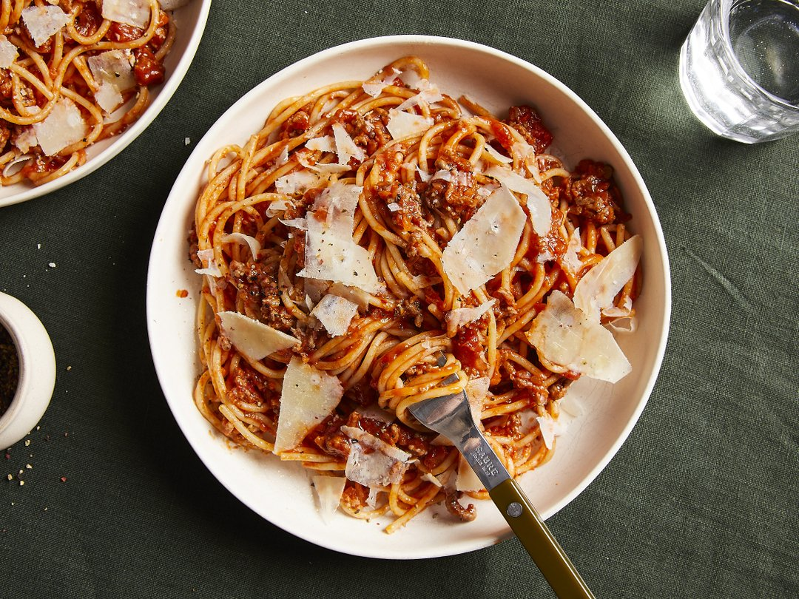

Spaghtti Bolognese

Description
Spaghetti Bolognese is one of the dishes from my childhood that stands out the most. Rich, saucey and incredibly
flavorful. Hardly any other pasta dish is as well-known as this one. The soffritto base is the foundation of the
flavorful sauce: Finely diced onions, celery and carrots, which are gently sautéed in olive oil. The best thing
about it is that you can use a food processor to finely chop the ingredients for the soffritto, then store in a
jar for use in various dishes throughout your week. This is a really useful kitchen hack!
Ingredients
- spaghetti
- ground beef
- onion
- garlic
- carrot
- celery
- olive oil
- canned crushed tomatoes
- tomate paste
- dried oregano
- parmesan cheese
- salt
- pepper
Steps
-
For the soffritto, peel and halve the onions and garlic. Peel and roughly chop the carrot. Roughly chop the
celery. Add them to a food processor or blender and chop everything evenly until it is about as fine as the
ground beef. Heat the olive oil in a large non-stick frying pan over low heat. Add the chopped vegetables
and sauté for approx. 10–15 min. Stir regularly to make sure nothing burns.
-
Then add the ground beef to the pan and fry for another approx. 10–15 min. While frying, break up the meat
with a cooking spoon. Season with salt and pepper.
-
Add the canned crushed tomatoes, tomato paste, salt, pepper and dried oregano. Simmer uncovered over medium
heat for approx. 15–30 min. until the sauce has thickened.
-
In the meantime, cook the spaghetti in plenty of boiling salted water according to package instructions
until al dente. Drain the pasta and serve with the Bolognese sauce and grated Parmesan cheese.